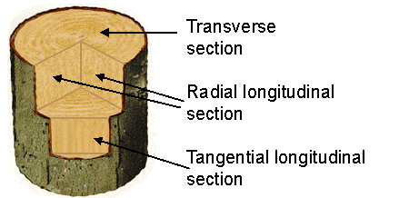

Glossary of TermsRed HeatThe colour of a body when heated can give an indication of its temperature
Transverse, radial longitudinal and tangential longitudinal wood thin sections WWhen identifying wood, very thin slices (thin sections) are cut. Each is mounted on a glass slide and viewed under an optical microscope. To get a complete picture of the cellular structure of the wood used, sections are taken from three planes to show different views of the detailed anatomy which characterises one tree from another. The transverse section cuts at right angles to the main axis of a tree trunk or branch. The other two sections, radial longitudinal and tangential longitudinal, cut through the tree trunk (or branch) lengthways. |
|